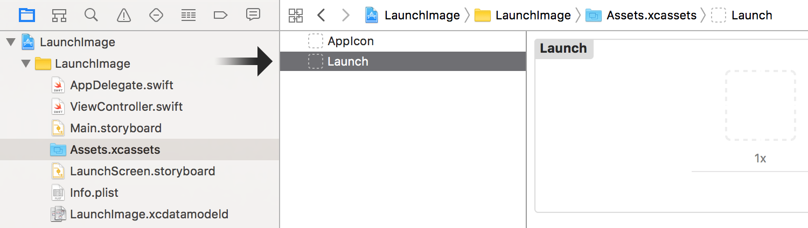
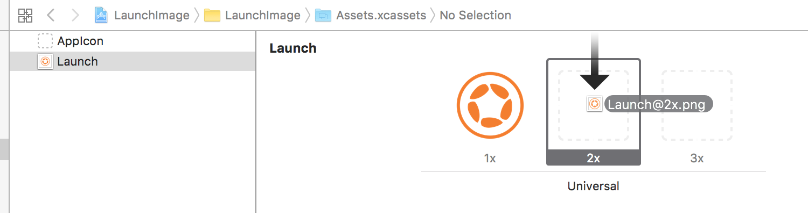
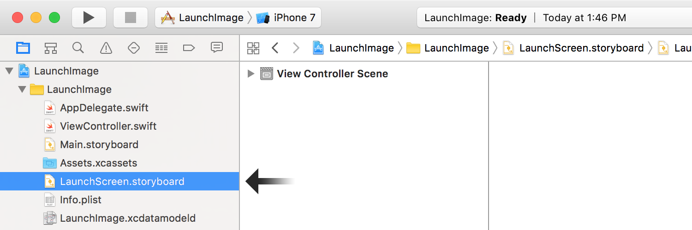

Building Launch Screens — iOS
This guide outlines how to customize a
Xcode Configuration
As the foundation for this guide, please use our project template which contains the basic required files.
Download the project template
( from our GitHub repository and unzip it.launchimage-master.zip)Double click on the
LaunchImage.xcodeprojfile to launch Xcode.
Xcode is a powerful and comprehensive development tool which may seem overwhelming. Fortunately, our project template considerably streamlines the configuration process. Assuming you’ve downloaded and opened the template as outlined above, simply follow these steps:
- In Xcode, within the left-side Navigator column, expand the
LaunchImage → LaunchImage folder tree:

If the Navigator is not visible, reveal it via
- In the Navigator folder tree, select the
Assets.xcassetsentry:

- In your desired image editing application, create three images. You’ll need a “base” version plus one version doubled in size and another tripled in size. These don’t need to adhere to specific pixel sizes since they will be scaled to fit the
UIImageViewwhile maintaining the original aspect ratio.
We include three sample images within the project template package which you can use for testing.
Save/copy the three images to your Corona project’s root folder
(alongside with anmain.lua)iOS-style suffix scheme ofLaunch.png,Launch@2x.png, andLaunch@3x.pngrespectively.Back in Xcode, in the central pane, select the
Launchentry:

- Directly to its right, you’ll notice three “slots” labeled as 1x, 2x, and 3x. From the Finder, drag the images you created earlier into their respective slots:
Launch.pnginto the 1x slot,Launch@2x.pnginto the 2x slot, andLaunch@3x.pnginto the 3x slot:


- Now, in the left-side Navigator column, select the
LaunchScreen.storyboardfile:

In the center pane, if you select
- Save your project now, then select
File → Export… from the main Xcode application menu.
Before exporting, ensure that LaunchScreen.storyboard is still selected in the
- In the export dialog panel, navigate to your Corona project’s root folder. Then, near the bottom, locate the File Format selection box and change the selection to
Interface Builder Storyboard Package .

It’s critical that you select
- When you’re ready, click Save to create a
LaunchScreen.storyboardcfolder for your project.
To ensure that you did everything properly, please follow this checklist:
In the Finder, navigate to your Corona project’s root folder.
Inside, check for a
LaunchScreen.storyboardcfile. If it doesn’t exist, you may have forgotten to choose the proper location(the project’s root folder) when exporting the file. If necessary, repeat steps8-10 above.Get further information on the
LaunchScreen.storyboardcfile(⌘-I) . Its kind should be anInterface Builder Compiled Storyboard Document . If it’s not, you may have forgotten to choose the correct file format when exporting the file. If necessary, repeat steps8-10 above.Check that the folder contains the three images which will be used for the launch screen:
Launch.png,Launch@2x.png, andLaunch@3x.png. If these files don’t exist, you may have forgotten to save/copy them to the root folder.
Build Settings
One final aspect is required to link up your new compiled storyboard package with the Corona project:
Open the Corona project’s
build.settingsfile.Within the
iphone→plisttable, add aUILaunchStoryboardNamekey with a value of"LaunchScreen":
settings =
{
iphone =
{
plist =
{
CFBundleIconFiles = {}, -- Required!
UILaunchStoryboardName = "LaunchScreen", -- Required!
},
},
}
- Save your
build.settingsfile.
If you have a UILaunchImages key and associated plist table UILaunchStoryboardName key supersedes it and the LaunchScreen.storyboardc file will control all of your launch screens.
Static Method
An alternative method to creating a LaunchScreen.storyboardc file is to include a set of static images within your project folder, then link them up within the project’s build.settings file. These images must adhere to the names/sizes indicated below and they must be placed in the project’s root directory alongside main.lua.
If you have followed the steps above to create a
| File | Size (w×h) | Orientation | Target Devices |
|---|---|---|---|
Default@2x.png |
640 × 960 | portrait | iPhone 4s |
Default-568h@2x.png |
640 × 1136 | portrait | iPhone 5 / 5s |
Default-Landscape-568h@2x.png |
1136 × 640 | landscape | iPhone 5 / 5s |
Default-667h@2x.png |
750 × 1334 | portrait | iPhone 6 / 6s / 7 |
Default-Landscape-667h@2x.png |
1334 × 750 | landscape | iPhone 6 / 6s / 7 |
Default-736h@3x.png |
1242 × 2208 | portrait | iPhone 6 Plus / 6s Plus / 7 Plus |
Default-Landscape-736h@3x.png |
2208 × 1242 | landscape | iPhone 6 Plus / 6s Plus / 7 Plus |
Default-Portrait.png |
768 × 1024 | portrait | iPad 2 / 3, iPad Mini 1 |
Default-Landscape.png |
1024 × 768 | landscape | iPad 2 / 3, iPad Mini 1 |
Default-Portrait@2x.png |
1536 × 2048 | portrait | |
Default-Landscape@2x.png |
2048 × 1536 | landscape | |
Default-Portrait-1366@2x.png |
2048 × 2732 | portrait | iPad Pro 12" |
Default-Landscape-1366@2x.png |
2732 × 2048 | landscape | iPad Pro 12" |
Once you’ve added these files to your project folder, you must specify their existence and other definitions in the UILaunchImages table of build.settings:
settings =
{
iphone =
{
plist =
{
-- Required launch image files/definitions table
UILaunchImages = {
{ -- iPhone 4 Portrait
["UILaunchImageMinimumOSVersion"] = "7.0",
["UILaunchImageName"] = "Default",
["UILaunchImageOrientation"] = "Portrait",
["UILaunchImageSize"] = "{320, 480}"
},
{ -- iPhone 4 LandscapeLeft
["UILaunchImageMinimumOSVersion"] = "7.0",
["UILaunchImageName"] = "Default",
["UILaunchImageOrientation"] = "LandscapeLeft",
["UILaunchImageSize"] = "{320, 480}"
},
{ -- iPhone 4 LandscapeRight
["UILaunchImageMinimumOSVersion"] = "7.0",
["UILaunchImageName"] = "Default",
["UILaunchImageOrientation"] = "LandscapeRight",
["UILaunchImageSize"] = "{320, 480}"
},
{ -- iPhone 5 Portrait
["UILaunchImageMinimumOSVersion"] = "7.0",
["UILaunchImageName"] = "Default-568h",
["UILaunchImageOrientation"] = "Portrait",
["UILaunchImageSize"] = "{320, 568}"
},
{ -- iPhone 5 LandscapeLeft
["UILaunchImageMinimumOSVersion"] = "7.0",
["UILaunchImageName"] = "Default-568h",
["UILaunchImageOrientation"] = "LandscapeLeft",
["UILaunchImageSize"] = "{320, 568}"
},
{ -- iPhone 5 LandscapeRight
["UILaunchImageMinimumOSVersion"] = "7.0",
["UILaunchImageName"] = "Default-568h",
["UILaunchImageOrientation"] = "LandscapeRight",
["UILaunchImageSize"] = "{320, 568}"
},
{ -- iPad Portrait
["UILaunchImageMinimumOSVersion"] = "7.0",
["UILaunchImageName"] = "Default-Portrait",
["UILaunchImageOrientation"] = "Portrait",
["UILaunchImageSize"] = "{768, 1024}"
},
{ -- iPad LandscapeLeft
["UILaunchImageMinimumOSVersion"] = "7.0",
["UILaunchImageName"] = "Default-Landscape",
["UILaunchImageOrientation"] = "LandscapeLeft",
["UILaunchImageSize"] = "{768, 1024}"
},
{ -- iPad LandscapeRight
["UILaunchImageMinimumOSVersion"] = "7.0",
["UILaunchImageName"] = "Default-Landscape",
["UILaunchImageOrientation"] = "LandscapeRight",
["UILaunchImageSize"] = "{768, 1024}"
},
{ -- iPhone 6 Portrait
["UILaunchImageMinimumOSVersion"] = "8.0",
["UILaunchImageName"] = "Default-667h",
["UILaunchImageOrientation"] = "Portrait",
["UILaunchImageSize"] = "{375, 667}"
},
{ -- iPhone 6 LandscapeLeft
["UILaunchImageMinimumOSVersion"] = "8.0",
["UILaunchImageName"] = "Default-667h",
["UILaunchImageOrientation"] = "LandscapeLeft",
["UILaunchImageSize"] = "{375, 667}"
},
{ -- iPhone 6 LandscapeRight
["UILaunchImageMinimumOSVersion"] = "8.0",
["UILaunchImageName"] = "Default-667h",
["UILaunchImageOrientation"] = "LandscapeRight",
["UILaunchImageSize"] = "{375, 667}"
},
{ -- iPhone 6 Plus Portrait
["UILaunchImageMinimumOSVersion"] = "8.0",
["UILaunchImageName"] = "Default-736h",
["UILaunchImageOrientation"] = "Portrait",
["UILaunchImageSize"] = "{414, 736}"
},
{ -- iPhone 6 Plus LandscapeLeft
["UILaunchImageMinimumOSVersion"] = "8.0",
["UILaunchImageName"] = "Default-Landscape-736h",
["UILaunchImageOrientation"] = "LandscapeLeft",
["UILaunchImageSize"] = "{414, 736}"
},
{ -- iPhone 6 Plus LandscapeRight
["UILaunchImageMinimumOSVersion"] = "8.0",
["UILaunchImageName"] = "Default-Landscape-736h",
["UILaunchImageOrientation"] = "LandscapeRight",
["UILaunchImageSize"] = "{414, 736}"
},
{ -- iPad Pro Portrait
["UILaunchImageMinimumOSVersion"] = "9.0",
["UILaunchImageName"] = "Default-Portrait-1366",
["UILaunchImageOrientation"] = "Portrait",
["UILaunchImageSize"] = "{1024, 1366}"
},
{ -- iPad Pro Landscape Right
["UILaunchImageMinimumOSVersion"] = "9.0",
["UILaunchImageName"] = "Default-Landscape-1366",
["UILaunchImageOrientation"] = "LandscapeRight",
["UILaunchImageSize"] = "{1024, 1366}"
},
{ -- iPad Pro Landscape Left
["UILaunchImageMinimumOSVersion"] = "9.0",
["UILaunchImageName"] = "Default-Landscape-1366",
["UILaunchImageOrientation"] = "LandscapeLeft",
["UILaunchImageSize"] = "{1024, 1366}"
},
},
},
},
}